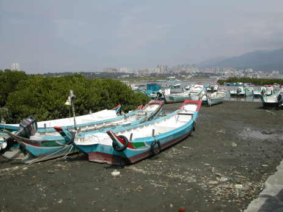

|
11.如何處理挖子尾海濱植物生態環境的危機 看見紅樹林中、沙地上到處都是垃圾常痛心，也常站在垃圾中做研究，想一想如何處
理海濱的垃圾呢？經過討論我們的建議如下：
(1)發起淨灘活動大家一去撿垃圾 八里鄉每年都有類似的活動，結合社區民眾、環保組織一同到挖子尾沙灘上處理垃
圾還給大自然一個沒有垃圾的沙地、河口濕地。
(2)政府相關部門應設立紅樹林生態保護區的管理部門，管理淡水河口紅樹林。
(3)設立生態保護區巡邏人員，有效的管理保護區。
(4)規劃挖子尾生態保護區觀賞步道，提供民眾觀賞、教學研究。
(5)最重要的是住在淡水河流域的大台北地區居，請不要將垃圾往河流或水溝中 丟棄，你丟 棄的垃圾將隨著大水而衝到河口，堆積在紅樹林中、海濱沙地上，造成海濱植物生存環
境上的破壞。
 |